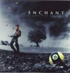

| Artist: | Enchant |
| Title: | Juggling Nine Or Dropping Ten |
| Label: | Inside Out IOMCD064 |
| Length(s): | 64 minutes |
| Year(s) of release: | 2000 |
| Month of review: | 10/2000 |
| 1) | Paint The Picture | 7.03 |
| 2) | Rough Draft | 6.14 |
| 3) | What To Say | 4.20 |
| 4) | Bite My Tongue | 5.41 |
| 5) | Colors Fade | 5.25 |
| 6) | Juggling Knives | 5.02 |
| 7) | Black Eyes & Broken Glass | 4.33 |
| 8) | Elyse | 5.47 |
| 9) | Shell Of A Man | 6.01 |
| 10) | Broken Wave | 5.22 |
| 11) | Traces | 7.19 |
| 12) | Know That | 1.27 |